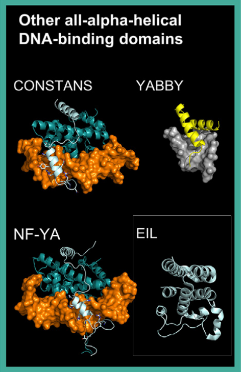

The All-Alpha-Helical DBDs superclass includes transcription factors (TFs) whose DNA-binding domains (DBDs) are composed exclusively of alpha-helices. Unlike other alpha-helical DBDs (such as HTH or basic domains), these TFs exhibit distinct structural and DNA-binding characteristics. This superclass comprises three classes: Heteromeric CCAAT-Binding Factors, HMG Domain Factors, and EIL (Ethylene-Insensitive3-Like) Factors.

The EIL class is plant-specific and includes Ethylene-Insensitive3 (EIN3)-like factors. The NMR solution structure of Arabidopsis EIL3 DBD (PDB: 1WIJ) reveals a novel fold composed of five alpha-helices. This structure includes candidate residues for DNA contact, although their precise role remains to be experimentally confirmed [src].